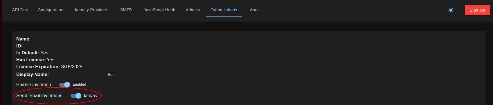
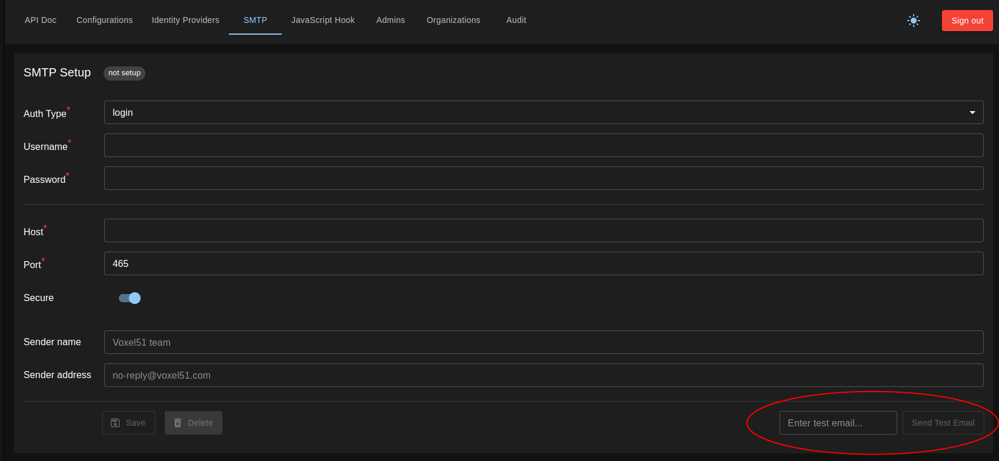

Pluggable Authentication ¶¶
FiftyOne Teams v1.6.0 introduces Pluggable Authentication that provides the
Central Authentication Service (CAS). CAS is a self-contained authentication
system with two modes ( legacy and internal). Legacy mode uses Auth0.
Internal mode eliminates the Auth0 external dependency and may run in
environments without egress to the internet. CAS provides a UI, REST API, and
JavaScript (JS) Hook mechanism to manage FiftyOne Teams user data and
authentication.
FiftyOne Authentication Modes ¶¶
The setting FIFTYONE_AUTH_MODE specifies the authentication mode legacy or
internal.
Legacy Mode ¶¶
In legacy mode, FiftyOne Teams uses Auth0 for user authentication and authorization. This mode requires an external connection to Auth0 endpoints. User data is eventually consistent (where changes are reflected across FiftyOneTeams eventually). Auth0 contains the configuration for identity providers and the persistence of user data. Auth0 supports multiple providers (including SAML). For the supported IdPs, see Auth0 Enterprise Identity Providers.
Internal Mode ¶¶
In internal mode, FiftyOne Teams the CAS replaces Auth0. FiftyOne Teams will not require network egress to external services. User data is immediately consistent (where changes are reflected across FiftyOne Teams instantly). Directory data is immediately written to MongoDB, and organizations have the autonomy to manage their Identity Provider Configuration. Internal mode supports OpenID Connect (OIDC) and OAuth2.
NOTE: SAML is not supported in internal mode
Super Admin UI ¶¶
The Super Admin UI contains FiftyOne Teams deployment wide configurations. When logging into FiftyOne Teams as an admin, you are in the context of an organization. Settings are scoped by organization and only apply to that organization. The Super Admin UI allows you to administer all organizations and global configurations (Identity Providers, Session timeouts, and JS hooks).
NOTE: In v1.6.0, the Super Admin UI is only available in internal mode

To login to this application navigate to
https://<YOUR_FIFTYONE_TEAMS_URL>/cas/configurations. In the top right of the
screen, and provide the FIFTYONE_AUTH_SECRET to login.
NOTE: The value of
FIFTYONE_AUTH_SECRETshould be set prior to installation or upgrade.
New User Invitations ¶¶
As of FiftyOne Teams 2.1.0, onboarding new users can be done via invitation links. To do so, “Enable invitation” must be toggled on in the Organizations section of the Super Admin UI.

This allows creating invitation links in internal mode that can be manually sent to users. When those users click the links, they will be added to the Organization and prompted to log in.
As of FiftyOne Teams 2.2.0, these invitation links can be automatically sent via an email through a configured SMTP server. This provides similar functionality to legacy mode email invitations, but without the need for Auth0 or any other external connections beyond the SMTP server itself.
NOTE: Unless the deployment is a Managed Deployment, users must provide their own SMTP server to use in internal mode. This new functionality provides a way to authenticate and communicate with your existing mail server.
To do so, “Send email invitations” must be toggled on in the Organizations section of the Super Admin UI

To configure your SMTP connection, navigate to the SMTP section of the Super Admin UI

A notification at the top of the menu will inform if an SMTP configuration is already saved. Currently, only one SMTP configuration can be saved per Organization.
Select the appropriate type of authentication for your SMTP server and fill out the associated fields. When you save the configuration, FiftyOne Teams will do a preliminary check to ensure that the SMTP server is reachable at the host provided. The configuration will not save otherwise.
Additionally, users can enter a valid email address and click Send Test Email to test the connection.

NOTE: Emails and an SMTP connection are not required to use invitations. Invitation links can still be generated and manually distributed without an SMTP configuration.
Identity Providers (IdP) ¶¶
In internal mode, use the CAS REST API or Super Admin UI to configure FiftyOne teams to authenticate users via OIDC or OAuth2 compatible Identity Providers. Below is an example configuration for KeyCloak as an Identity Provider.
{
"id": "keycloak-example",
"wellKnown": "https://keycloak.dev.acme.ai/auth/realms/acme/.well-known/openid-configuration",
"name": "KeyCloak",
"type": "oauth",
"authorization": {
"url": "https://keycloak.acme.ai/auth/realms/acme/protocol/openid-connect/auth",
"params": {
"scope": "openid email profile"
}
},
"clientId": "...",
"clientSecret": "...",
"issuer": "https://keycloak.dev.acme.ai/auth/realms/acme",
"token": {
"url": "https://keycloak.dev.acme.ai/auth/realms/acme/protocol/openid-connect/token"
},
"userinfo": {
"url": "https://keycloak.dev.acme.ai/auth/realms/acme/protocol/openid-connect/userinfo"
},
"idToken": true,
"style": {
"logoDark": "https://images.com/keycloak.svg",
"bg": "#47abc6",
"text": "#fff"
},
"profile": "(e,l)=>(console.log({profile:e,tokens:l}),{id:e.sub,name:e.name,email:e.email,image:null})",
"allowDangerousEmailAccountLinking": true
}
Getting Started with Internal Mode ¶¶
These steps are only required to run FiftyOne Teams in internal mode. Please skip when using Auth0 in legacy mode.
-
Configure your Identity Provider
-
Login to the SuperUser UI by navigating to
https://<YOUR_FIFTYONE_TEAMS_URL>/cas/configurationsand in the top right, and provide theFIFTYONE_AUTH_SECRETto login. -
Create an Admin
-
Click on the “Admins” tab
-
Click “Add admin” in the bottom left
-
Set the name and email address (as it appears in your Identity Provider) and click “Add”
-
Add your Identity Provider
-
Click on the “Identity Providers” tab at the top of the screen and click “Add provider”
-
Fill out the “Add identity provider”
- You can also click “Switch to advanced editor” to provide the full configuration as a JSON object
- In the “Profile callback” field, set the mapping that your Identity Provider expects
- Login with the admin user
-
Navigate to
https://<YOUR_FIFTYONE_TEAMS_URL>/datasets -
You should see the login screen for your newly configured authentication provider
-
Before logging in, set the admin user (in step 5). Otherwise, you will need to remove this user from the database and try again.
-
Click the login button and provide the credentials of the Admin user (set in step 3)
-
Click on the icon in the top right corner then click “Settings”
-
Click “Users” on the left side
-
Validate the user is listed as an admin
Syncing with 3rd Party Directories (Open Directory, LDAP, and Active Directory) ¶¶
Below is an example of how to use JavaScript hooks to sync FiftyOne Teams with a corporate directory (such as Open Directory, LDAP, or Active Directory) via an intermediary REST API or Identity Provider. The recommended setup is with OAuth/OIDC claims, however the example below illustrates a more intricate integration.
This example specifically addresses a scenario in which additional actions are
performed during the signIn trigger. This demonstrates how hooks can extend
beyond simple authentication to interact with external APIs and internal
services for complex user management and group assignment tasks. Here’s a
breakdown of the example:
// Example JavaScript hook implementation
async function Hook(context) {
const { params, services, trigger } = context;
const { user } = params;
switch (trigger) {
// Callback: user is trying to sign in
case "signIn":
// returning false will prevent user from signing in
try {
const groups = await getGroups();
for (const group of groups) {
await addUserToGroup(group.name);
}
} catch (error) {
console.error(error);
}
return true;
}
async function getGroups() {
const { account } = params;
const response = await services.util.http.get(
`https://fiftyone.ai/list_groups/${user.id}`,
{ headers: { Authorization: `Bearer ${account?.access_token}` } }
);
return response.json();
}
async function addUserToGroup(groupName) {
const orgId = "my_org_id";
// Retrieve all existing groups
const groups = await services.directory.groups.listGroups(orgId);
// Find an existing group by name
let group = groups.find((group) => {
return group.name === groupName;
});
// If group does not exist, create a new group
if (!group) {
group = await services.directory.groups.createGroup(
orgId,
groupName
);
}
if (!group.userIds.includes(user.id)) {
// Add signed-in user to the group and update the group
const updatedGroupName = undefined;
const updatedGroupDescription = undefined;
const updatedGroupUserIds = [...group.userIds, user.id];
const accessorId = undefined;
await services.directory.groups.updateGroup(
orgId,
group.id,
accessorId,
updatedGroupName,
updatedGroupDescription,
updatedGroupUserIds
);
}
}
}
Context Object ¶¶
The context object provides information about the current operation, including parameters like the user’s details, and services (services) that offer utility functions and access to directory operations.
External API Integration ¶¶
-
getGroups: This function calls an external API to retrieve a list of groups to which the signing-in user should be added. It utilizes theservices.util.http.getmethod for making the HTTP request, demonstrating how external services can be queried within the hook. -
addUserToGroup: For each group retrieved from the external API, this function checks if the group exists in the organization’s directory. If a group does not exist, it is created, and then the user is added to it. This process involves querying and modifying the organization’s group directory, illustrating the hook’s capability to perform complex operations like dynamic group management based on external data.
Error Handling ¶¶
- The try-catch block around the external API call and group manipulation logic ensures that errors do not prevent the user from signing in but are properly logged
Summary ¶¶
This hook example demonstrates a pattern for extending authentication flows in CAS with custom logic. By integrating with an external API to fetch group information and manipulating the organization’s group memberships accordingly, it showcases the flexibility and extensibility of hooks in supporting complex, real-world authentication and authorization scenarios.
REST API ¶¶
You can view the REST API Documentation by logging into the Super Admin UI (see
above) or by directly visiting https://<YOUR_FIFTYONE_TEAMS_URL>/cas/api-doc
Configuration ¶¶
| Setting | Type | Default | Description |
authentication_providers |
Array |
[] |
A list of definitions of OIDC and/or OAuth providers. |
authentication_provider.profile |
String (parseable to JS function) |
null |
When provided this function is called to map the external user_info to the internal fiftyone user/account. |
session_ttl |
Number |
300 |
Time in seconds for sessions to live after which users will be forced to log out. Must be greater than 120 seconds to support refreshing of user session using refresh token. |
js_hook_enabled |
Boolean |
true |
When set to False, configured JavaScript hooks will not be invoked. |
js_hook |
String (parseable to a single JS function) |
null |
JavaScript hook which is invoked on several CAS events described in JS Hooks section below |
skipSignInPage |
Boolean |
false |
When set to True, sign in page with identity provider choices will be skipped when there is only one identity provider is configured |
JavaScript Hooks ¶¶
This documentation outlines the JavaScript hook implementation for the Central Authentication Service (CAS). As a CAS superuser, you are able to define JavaScript functions that integrate with various authentication flows within CAS, customizing the authentication processes.
Overview ¶¶
JavaScript hooks allow superusers to programmatically influence authentication flows, including sign-in, sign-up, JWT handling and customization, redirection, and session management. This document describes the available hooks, their triggers, expected return types, and contextual information provided to each hook.
Example JavaScript Hook ¶¶
// Example JavaScript hook implementation
async function Hook(context) {
const { params, services, trigger } = context;
switch (trigger) {
// user is trying to sign in
case "signIn":
// returning false will prevent user from signing in
return true;
// JWT token is created for user session
case "jwt":
// custom payload returned will be merged with default payload
return {};
// user has logged out
case "logout":
// returning or throwing here does not affect the sign out flow
break;
// user is being redirected on sign in our sign out
case "redirect":
// user will be redirected to this URL on sign in our sign out
return "/settings/accounts";
}
}
Actionable Triggers ¶¶
| Trigger | Description | Return Type |
signIn |
Invoked when a user signs in. If the hook returns false or error is thrown, sign-in will be prevented. | Boolean |
signUp |
Invoked when a new user signs in for the very first time. If the hook returns false or an error is thrown, sign-in will be prevented and a user/account will not be created. | |
jwt |
Invoked when JWT is created (on signIn, signUp, refresh token). The returned object will override payload of default JWT payload. If an error is thrown, the session will be expired and user will be redirected to sign-in | Object | undefined |
redirect |
Invoked post signIn or signOut. The user will be redirected to the URL/Path returned from the hook. | String (URL) |
session |
Invoked when a request for a session (on signIn, signUp, refresh token) is received. |
Event-Only Triggers
| Trigger | Description |
signOut |
Invoked when a user signs out. |
createUser |
Invoked when the adapter is asked to create a user. |
linkAccount |
Invoked when an account is linked to a user. |
JavaScript Hooks Contextual Parameters
| Parameter | Description | Available in Triggers |
token |
The payload of a JWT token. | signIn, signUp, jwt, session, signOut, linkAccount, createUser |
user |
The signed-in user object. | signIn, signUp, jwt, linkAccount |
account |
The account from an identity provider. | signIn, signUp, jwt, linkAccount |
profile |
The profile from an identity provider. | signIn, signUp, jwt, linkAccount |
isNewUser |
True if a user is signing in for the first time. | jwt |
trigger |
Specifies the current trigger event. | jwt |
Session |
The session object. | session |
services |
Provides access to various services. | all |
Services
| Service | Description |
services.util.http |
Provides get, post, put, and delete functions for making HTTP requests from a JS Hook. |
services.userContext |
Object containing information about the user performing the current action. |
services.directory |
|
services.directory.users |
The UserService - providing methods for interacting with the directory of users. |
services.directory.groups |
The GroupsService- providing methods for interacting with the directory of groups. |
services.config |
The ConfigService- providing methods for reading and writing the AuthenticationConfig. |
services.util |
|
services.directory.orgs |
The OrgsService- providing methods for interacting with the directory of organizations. |
services.webhookService |
Experimental |
process.env['MY_ENV_VAR'] |
Syntax for reading environment variables in a JS Hook. |